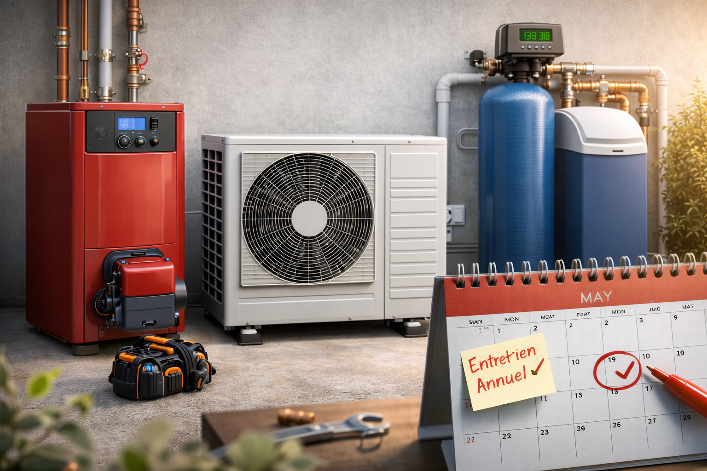
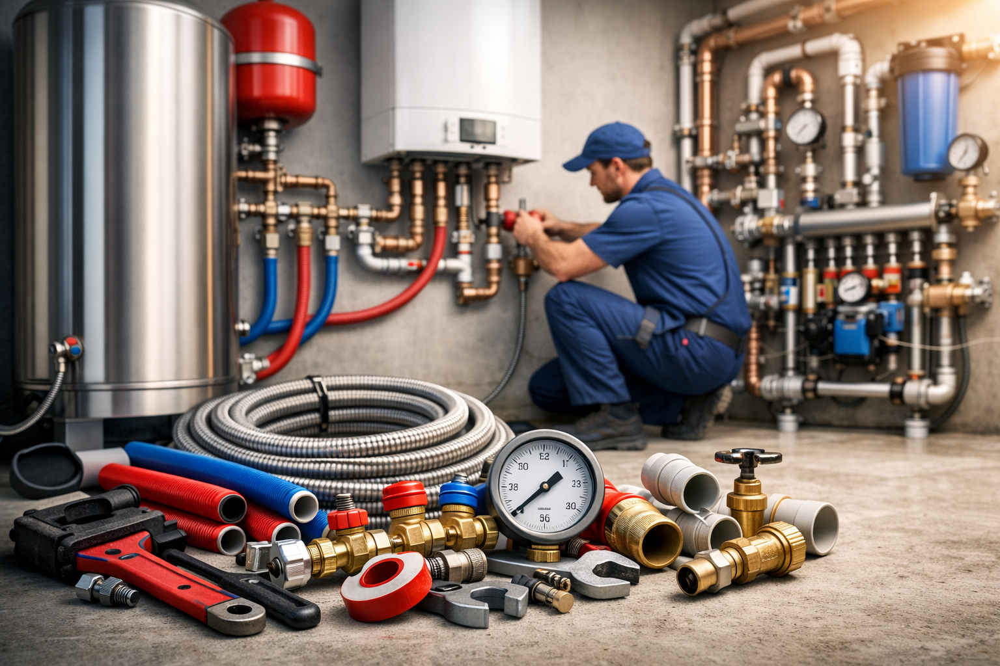
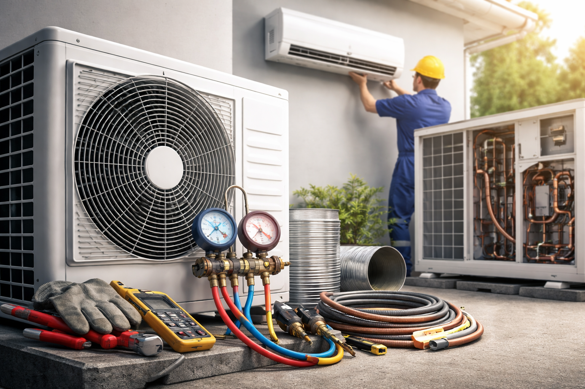
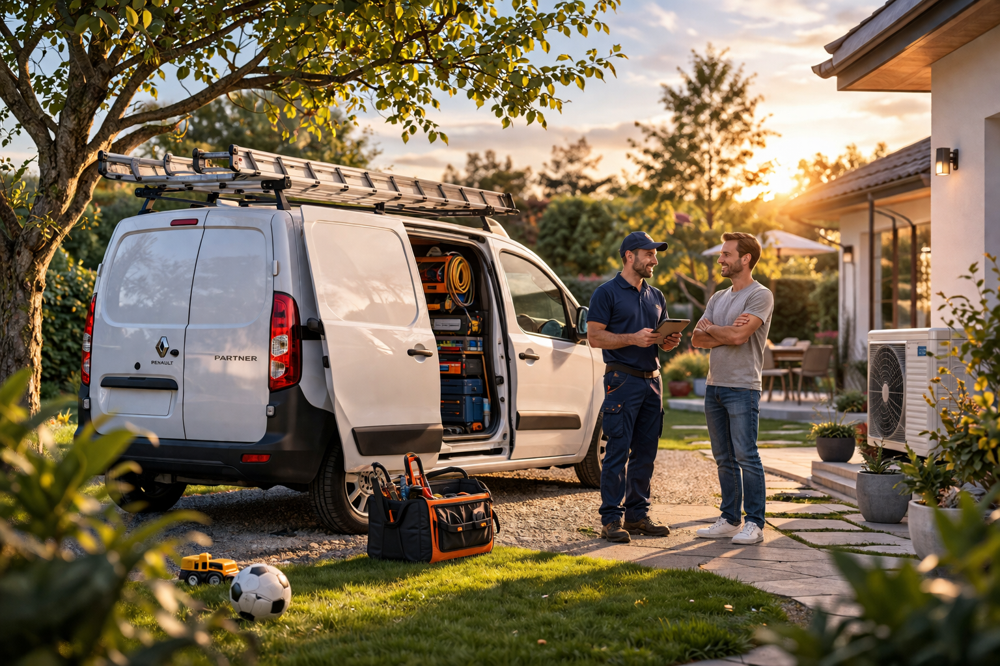
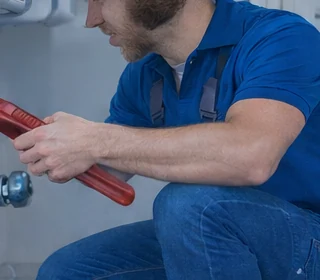

Un seul interlocuteur
Une approche claire et pratique pour suivre votre projet, de la première demande jusqu'à l'intervention sur site.
Artisan local à La Chapelle-Montmartin
FLB Dépannage accompagne les particuliers et les professionnels pour l'installation, l'entretien, la mise en service et le dépannage de vos équipements. Une présence de proximité pour vos besoins en plomberie, chaudière gaz et fioul, climatisation, pompe à chaleur et adoucisseur.

Une approche claire et pratique pour suivre votre projet, de la première demande jusqu'à l'intervention sur site.
Plomberie, chauffage, climatisation et traitement de l'eau, avec une réponse adaptée à votre besoin.
Une présence autour de Romorantin-Lanthenay et des communes voisines au sein d'un réseau de partenaires locaux.
En images
Un seul contact pour toutes vos prestations de plomberie, maintenance d'équipements et intervention à domicile.



Services
FLB Dépannage accompagne les particuliers et les professionnels pour les besoins courants du quotidien : fuite, remplacement d'équipement, remise en service, entretien d'installation, amélioration du confort thermique et intervention sur vos systèmes de plomberie, chauffage et climatisation.
Recherche de panne, réparation, remise en fonctionnement et intervention sur les équipements de plomberie, chauffage ou climatisation.
Réseaux d'eau, équipements sanitaires, remplacement d'éléments, rénovation partielle ou amélioration de votre installation existante.
Entretien, réglages, mise en service et suivi de systèmes de chauffage, chaudières gaz et fioul, radiateurs et solutions de confort thermique.
Installation, entretien et accompagnement pour améliorer votre confort intérieur en toute saison, avec une attention portée à la performance des équipements.

Domaines d'intervention
FLB Dépannage intervient sur les installations les plus courantes en plomberie, chauffage et climatisation. L'objectif est simple : remettre en état, entretenir, installer ou fiabiliser vos équipements avec une réponse adaptée à votre besoin et à votre confort au quotidien.
Suivi de l'installation, entretien, vérification du bon fonctionnement et accompagnement en cas de panne.
Intervention sur les besoins courants liés à la mise en service, au réglage et au confort de chauffe.
Solutions pour améliorer le confort d'usage, protéger les équipements et optimiser la qualité de l'eau.
Une approche préventive pour limiter les arrêts, préserver les performances et anticiper les besoins.
Zone d'intervention
Basé à La Chapelle-Montmartin, FLB Dépannage se déplace jusqu'à 40km autour de Romorantin-Lanthenay pour les besoins en plomberie, chauffage et climatisation. Cette implantation locale permet de rester proche du terrain et de proposer des interventions cohérentes sur le secteur.
Le secteur d'intervention couvre le Loir-et-Cher, l'Indre et le Cher, notamment Romorantin-Lanthenay, Chabris, La Chapelle-Montmartin, Villefranche-sur-Cher, Mennetou-sur-Cher, Châtres-sur-Cher, Gièvres, Langon-sur-Cher, Loreux, Maray, Saint-Julien-sur-Cher, Saint-Loup-sur-Cher, Villeherviers, Graçay, Levroux, Valençay et Pruniers-en-Sologne.
Méthode
Un fonctionnement simple pour aller à l'essentiel : comprendre votre besoin, planifier l'intervention, intervenir sur place et vous laisser une installation claire et remise en service lorsque cela est possible.
Vous pouvez appeler directement ou envoyer une demande via le formulaire pour expliquer votre besoin.
Type d'équipement, localisation, panne constatée, entretien ou installation : le besoin est précisé rapidement.
Réparation, entretien, mise en service ou remplacement d'un équipement selon la situation sur place.
Les coordonnées restent accessibles sur toute la page pour faciliter un rappel, un complément d'information ou un rendez-vous.
Questions fréquentes
Voici quelques repères utiles avant de prendre contact pour une demande en plomberie, chauffage ou climatisation.
Oui, FLB Dépannage intervient autour de Romorantin-Lanthenay et jusqu'à 40km alentours.
Oui, FLB Dépannage prend en charge la plomberie, le chauffage, l'entretien, la mise en service et le dépannage sur les équipements les plus courants.
Oui, la climatisation et la pompe à chaleur font partie des domaines d'intervention présentés sur le site.
Oui. Nos véhicules permettent l'acheminement de vos équipements neufs directement sur votre chantier.
Contact
Besoin d'un renseignement, d'un entretien, d'une mise en service ou d'une intervention sur votre installation ? Utilisez le formulaire ci-dessous ou contactez directement FLB Dépannage par téléphone.